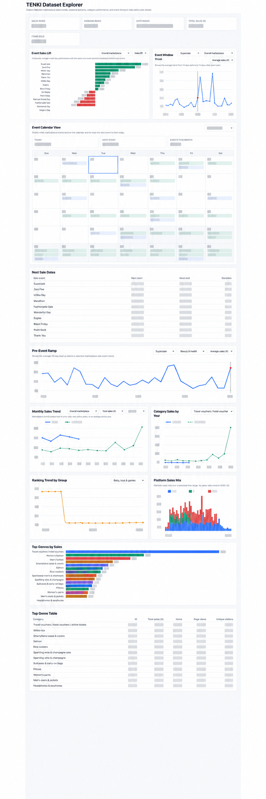

ARCHIVED INTERFACE PREVIEWTENKI Sales Intelligence
Built predictive models to estimate historical sales for 4,000+ Rakuten shops across 300 product genres from top-80 ranking data. Forecasting outputs were used in client-facing sales planning meetings; the companion dashboard translated model results into event, calendar, trend, and category views.
Private client data · visual preview only